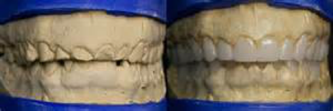
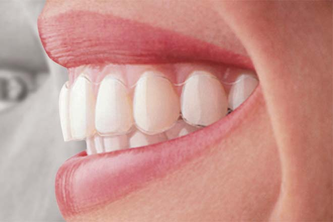

Cosmetic Dentistry & Invisalign
 Cosmetic Dentistry
Cosmetic Dentistry
While many dentists treat cosmetic dentistry as a simple procedure, we view esthetic dentistry as an art. We make sure that your teeth look natural and beautiful, so you can smile for many years to come.
First, to keep your teeth clean and white we gently remove any ugly tartar by hand. Artists may use many tools to create a picture. An artist isn’t just limited to a single paint brushes or a pencil. There are many types of bristles they can pick from, and there are pencils of varying shades. Today, artists aren’t even just limited to these tools- they can draw on an iPad and undo their changes without any difficulty. Professional artists use all these tools, new or old, to create the perfect design. Aesthetic dentistry is very much like this. We use techniques new and old to create your perfect smile.
Our Cosmetic Dentistry Looks Natural and Beautiful
Whether you come to us for the smallest filling or to completely change your smile, we ensure that our work looks natural. In cases where we are creating a more beautiful smile, so we use a set of tools that determines the perfect color and shape of your teeth and how they fit in with your smile.
We Use the Best Technology Available to Design your Perfect Smile
Artists have a studio of tools to choose from, so does Dr. Kerr. Dr. Kerr uses a variety of tools for cosmetic dentistry, here are a few examples:
Dr. Kerr will do custom staining of the crowns in order to make your tooth look completely natural. In the picture below, you can see Dr. Kerr “paint” the tooth. Technically, he isn’t “painting” the tooth, rather he is using dyes to custom stain the crown. This makes the crown look totally natural!
With another tool, we use a set of photographs to show the relationship of your teeth to your lips, eyes, and face. This helps assure that the final cosmetic dentistry will look great with your face specifically.
We also use a 3D imaging system to help us carefully plan and design your smile. First, we take a 3D x-ray of your mouth and jaw, and then then use a computer to super impose our dentistry into your mouth before we actually do any procedures. This technique assures that our cosmetic dentistry will function well and look great. (This technology is similar to the way that movies such as Superman and Lord of the Rings are animated. The difference is that we’re using this technology for a practical purpose: to make your mouth function well and look beautiful!)

Invisalign
Invisalign is an excellent alternative to traditional metal braces. We have improved upon many smiles with this technology over the years. With the Invisalign system, we create a set of clear trays that move your teeth over time. Invisalign is typically faster than traditional braces, and it is so comfortable and discreet it is practically unnoticeable.

If you want to schedule an appointment or get more info, call us at 207-775-0001 or email us at patientcare@drkerr.com. Our office is located in Portland, Maine.